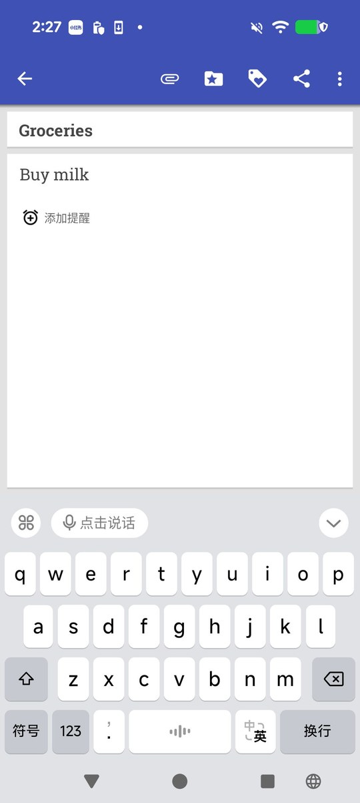
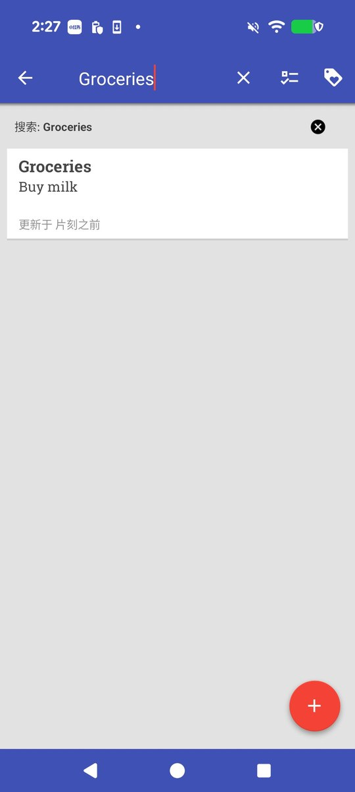

SpecFCG · Function Contract Graph
从真实执行轨迹里归纳用户级 function card（意图、参数、前后置条件、步骤、证据）， 组织成可组合的 Function Contract Graph，用目标驱动的图遍历合成测试计划， 执行结果再反过来修补卡片与边。
Background
工业界维护大量自然语言测试用例，但把它们变成可执行步骤仍然靠人。现有 LLM GUI agent 要么自由探索、要么逐步匹配事件，产出的路径不可复用，也不解释“为什么这一步能接下一步”。
FuncDroid、GraphDroid、ProphetAgent 建了功能图或状态图，但节点是行为簇/事件，不是带参数与前后置条件的可调用单元，无法组合出新的测试目标。
PropGen 从轨迹归纳 (P, I, Q) 属性，但属性是单功能 oracle，不能拼成多步流程，也无法判断“执行 A 之后 B 是否可执行”。
直接让 agent 从目标出发点屏幕，路径依赖当次模型状态；失败后无法定位是卡片写错、边连错，还是 UI 变了。
Method
每一步都落盘成可检查的 JSON/Markdown；LLM 只负责语义判断，图搜索、参数绑定、动作编译都是确定性的。
create_note 卡片（来自真实轨迹归纳）下面这张卡片是从 OmniNotes 的真实执行轨迹
omninotes-create-note-2 归纳出来的，未做人工改写。
create_note图不是一次画出来的。每采一条轨迹，就多一张卡片、多几条边； 下面是这个 App 的建图过程回放。
每一帧对应一次真实的 apply_patch：归纳卡片、加顺序边、补语义边。
边只用于授权执行（enables / sequence）；dataflow 只负责参数供给， 避免“数据上能接、但 UI 上还进不去”的短路径被误选。
切分轨迹、写卡片、判断两条边的语义、规划时判断“当前状态能否执行该卡片”“这条路径是否完整达成目标”。 一次批量分类完成所有候选卡，避免每卡多次调用。
图搜索（BFS/A*）、参数绑定、动作编译（显式 resource id 走快速路径，0 次 LLM）、 逐步执行与 postcondition 校验。
Core Ideas
不追求“让 agent 更聪明”，而是把测试知识变成可检查、可组合、可修补的资产。
卡片声明 Intent / Inputs / Preconditions / Postconditions / Effects / Steps / Evidence。
步骤是“做什么”的用户级描述，不是写死的坐标；执行时再按当前 UI 编译成具体点击。
同一张卡在不同分辨率、不同版本上仍可用。
enables 表示前置条件被上一张卡满足，sequence 来自真实轨迹，
dataflow 只负责参数供给。规划器先找可达路径，再用 LLM 判断路径是否真的达成目标——
两步分开，失败时能定位是哪一步错了。
目标里的 “titled Groceries with content Buy milk” 由参数绑定器映射到卡片的
note_title / note_content，未绑定的必填参数才触发一次 LLM 补全。
绑定结果随计划落盘，可复查。
执行失败先按类型归因（postcondition / 定位 / 前置条件 / 参数），再决定改卡片、改边还是加卡。 下面“效果”一节有一次真实的 FAIL → refine → PASS。
Demo
10 张 Pixel 9 Pro XL 真实截图，逐步对应卡片路径与编译出的动作；键盘 ← / → 可翻页。


每一步都有截图、动作、对应卡片，以及“为什么这一步能接下去”。
Results
Pixel 9 Pro XL（Android 16，1008×2244），OmniNotes 6.5.1 FOSS，模型走本地 magpie 网关。 成功判定 = 每张卡片 postcondition 满足 + 整条路径 goal 达成，只看执行后的可观察 UI。
| 用例 | 目标 | 规划路径 | 步数 | 动作成功 | LLM 调用 | 规划 | 执行 | 结果 |
|---|---|---|---|---|---|---|---|---|
composed-create-and-archive两卡组合 | Create a note titled Groceries with content Buy milk, then archive it | create_note → archive_note | 9 | 9/9 | 3 | 0.0s | 147.2s | PASS |
composed-create-and-share三卡组合 | Create a note titled Groceries with content Buy milk, then share it | create_note → open_note_by_title → invoke_share_chooser_for_note | 8 | 8/8 | 12 | 931.0s | 167.3s | PASS |
complex-four-card-share四卡长流程 | Create a note titled Groceries with content Buy milk, then search for it, open the note, and share it | create_note → search_notes_by_keyword → open_note_by_title → invoke_share_chooser_for_note | 11 | 11/11 | 11 | 688.8s | 105.7s | PASS |
create_note → search_notes_by_keyword → open_note_by_title →
invoke_share_chooser_for_note，11 个动作全部命中，没有回退重规划。第一次跑“创建并归档”时，卡片在保存前就停下了：
| 轮次 | 结果 | 失败类型 | 判定依据 |
|---|---|---|---|
| 第 1 轮 | FAIL | postcondition_failure |
UI 上只有工具栏和“已更新此笔记”提示，列表里看不到目标笔记卡片 ——
编辑器还没真正退出，create_note 的后置条件未满足。 |
| 修补 | — | 改卡片 | LLM 判定“最小修补是改 create_note 本身”：Intent 明确要求保存并回到列表，
Steps 把“按需重复 Back 直到列表出现”写成一步。没有新增卡片或边。 |
| 第 2 轮 | PASS | — | 9 个动作全部成功，最终列表里出现 Groceries / Buy milk，归档后列表为空。 |
Create a text note titled {note_title} with content {note_content}.
Create a note titled 'Groceries' with content 'Buy milk'. Open the note editor, enter the title and content, then commit/save the note (tap Save/checkmark if present; otherwise use system Back) and navigate back/up to the notes list. Finish only when the editor is closed and a saved note card showing 'Groceries' and 'Buy milk' is visible on the notes list; do not stop on the detail/edit screen.
card_updates[0].fields.Intent。所有原始结果行： pilot_composed_archive.jsonl（失败的第 1 轮）、 pilot_composed_archive_2.jsonl（通过的第 2 轮）、 pilot_composed_share.jsonl、 pilot_complex_flow.jsonl。
Usage
需要 Python 3.10+、一台连着 adb 的 Android 设备，以及任意 OpenAI 兼容网关。
pip install -e ".[dev,device]"
cp config/llm.example.yaml config/llm.local.yaml # 填 base_url / api_key_env / device.serial
# 1. 采集一条真实轨迹（也可以直接用手写的 actions JSON）
python scripts/collect_trace.py --app it.feio.android.omninotes.foss \
--actions examples/actions_create_note.json --trace-id create-note-1 \
--out traces/create-note-1.json
# 2. 归纳卡片，再把卡片连成图
python -m specfcg.cli mine --config config/llm.local.yaml --trace traces/create-note-1.json
python -m specfcg.cli build-graph --config config/llm.local.yaml
# 3. 规划：目标 -> 卡片路径 -> 绑定参数 -> 编译成动作
python -m specfcg.cli plan --config config/llm.local.yaml --goal "Create a note titled Trip"
# 4. 在真机上执行，失败就修图再跑（--max-rounds）
python -m specfcg.cli run --config config/llm.local.yaml --max-rounds 2 \
--goal "Create a note titled Groceries with content Buy milk, then share it"python -m pytest -q 当前 204 passed。加 --fake-llm --fake-device
可以在没有网关和设备的情况下跑通 mine → build-graph → plan 全链路，
适合先验证配置和卡片格式。
cards/ 一张卡片一个 Markdown；graph/edges.jsonl 边；
traces/ 原始轨迹；runs/ 计划、动作、截图、失败原因；
completion/ 缺失能力的假设与负知识。
Design & Citation
完整设计（数据模型、工作流、失败分类、补全流程）见仓库内设计文档；本页数字均可在仓库产物中复查。
@misc{specfcg2026,
title = {SpecFCG: Spec-Centric Function Contract Graph for LLM-Based Mobile GUI Testing},
author = {StarTrek project},
year = {2026},
url = {https://github.com/growvv/StarTrek}
}版式参考 MemGUI-Agent 项目主页， 按其结构（固定导航 / Hero + 指标条 / 分区卡片 / 论文式表格）复刻。